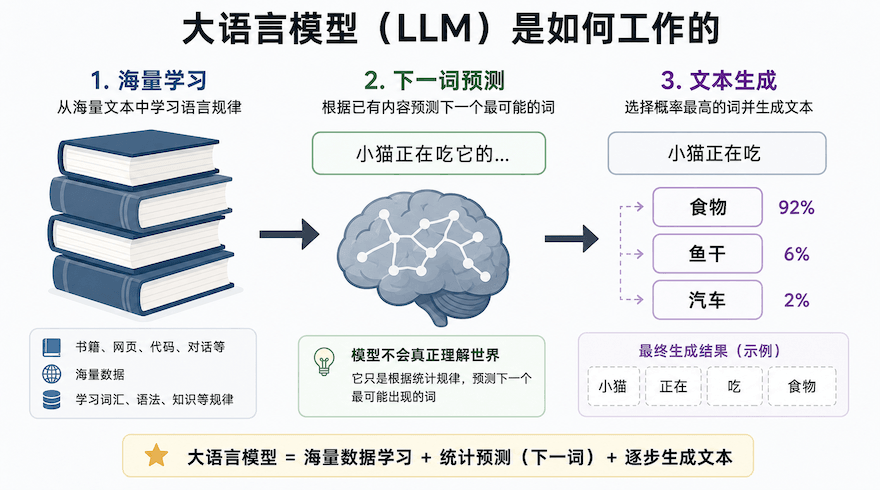
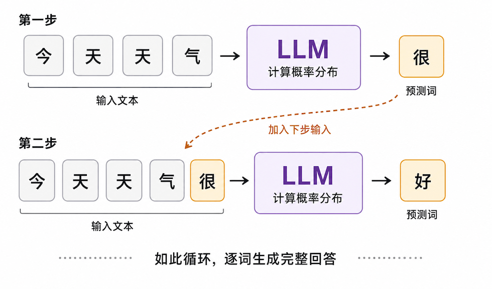
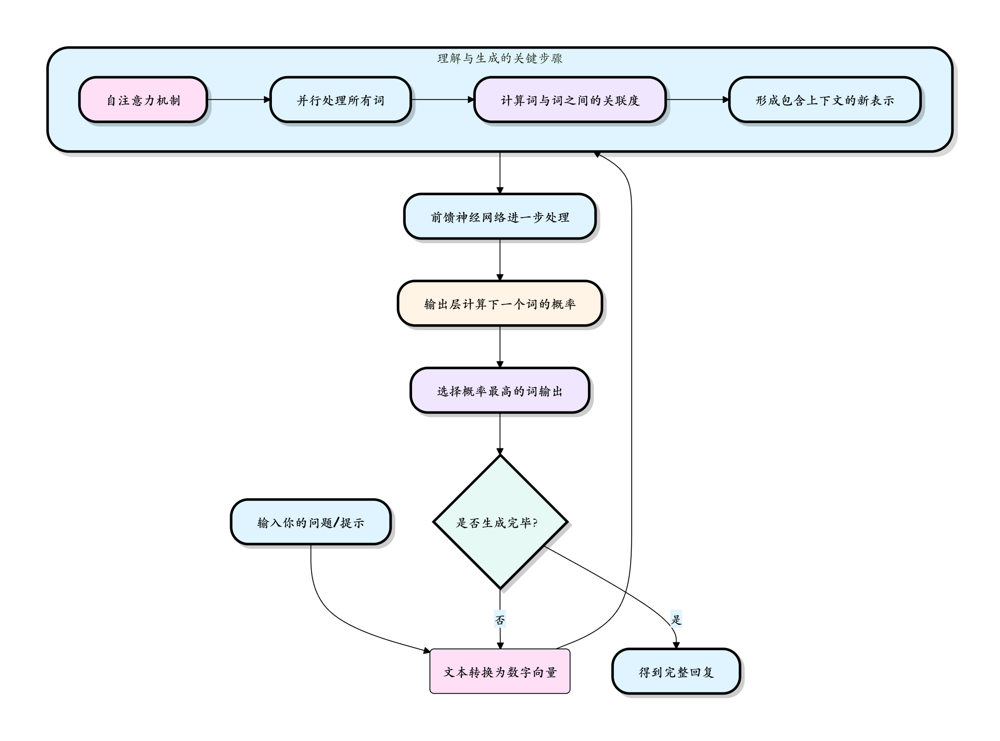
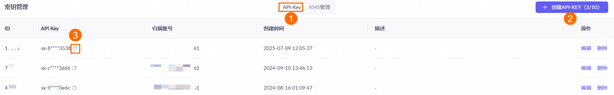

大規模言語モデル基礎（LLM）
大規模言語モデル（Large Language Model、略称LLM）はAIエージェントの頭脳であり、それを理解することがインテリジェントなエージェントを構築する基礎です。
大規模言語モデルがあなたと会話し、文章を書き、プログラミングができるのは、本質的には、あなたが与えたテキスト（プロンプト）に基づいて、一文字ずつ猜最も合理的な続きを生成するからです。
簡単に言うと、大規模言語モデルは膨大なテキストデータで訓練された深層学習モデルであり、人間の言語を理解し生成することができます。大規模言語モデルはインターネット上の膨大なテキストを分析することで言語の統計的規則を学習し、入力を受け取ると、学習した規則に基づいて最も合理的な続きを生成します。

大規模言語モデルを、次のように想像できます：非常に勤勉で記憶力に優れた学生：
学習段階（トレーニング）：インターネット上にあるほぼすべての公開テキスト（書籍、記事、Webページ、コードなど）を読み込みます（データ量は数兆語レベルに達します）。この過程で、それは暗記しているのではなく、非常に複雑な言語規則の体系を学習しているのです。
応用段階（推論）：あなたが質問や指示を与えると、学習した規則を活用して、一文字ずつ論理的で文脈に合った回答を生成します。
その「大きさ」は主に次の2つの側面に現れています：
- パラメータ規模が大きい：モデル内部には数百億から数兆に及ぶ調整可能なパラメータがあり、学習した言語知識が記録されています。
- 学習データが大きい：学習に使用されるテキストデータの量は膨大で、インターネット上の公開情報の精髄を網羅しています。
下図は、LLMがテキストを単語ごとに生成する過程を示しています。毎回1つの単語だけを予測し、その新しい単語を入力に加えて次の単語を予測し、この繰り返しによって完全な回答を生成します：

アニメーションデモ：
各ステップでは1つのことだけを行います：前文に基づいて次の文字を推測します。
LLMは非常に強力ですが、明確な限界もあります：
| 能力 | 説明 | 限界 |
|---|---|---|
| 知識のカットオフ | 学習データに期限がある | 学習後の新しい情報を知ることはできない |
| 数学的計算 | 簡単な計算はできる | 複雑な計算は間違いやすい |
| リアルタイム情報 | 外部ツールの補助が必要 | それ自体ではリアルタイムデータを取得できない |
| 事実の正確性 | 誤った情報を生成する可能性がある | ファクトチェックが必要 |
| 長文処理 | コンテキスト長に制限がある | 超長文では情報が失われる |
| 論理的一貫性 | 前後で矛盾することがある | 慎重な設計と検証が必要 |
重要な注意：LLMは全知全能ではありません。本質的には統計に基づくパターンマッチングシステムです。その限界を理解することによって、初めてその能力をより良く活用できます。
中核となる動作原理：Transformerアーキテクチャの概要
LLMの驚くべき能力は、その基盤となる中核技術なしには成り立ちません。Transformerアーキテクチャ。複雑な数学的原理を深く追究する必要はありませんが、その核となる考え方を理解することができます。
太陽系についての文章を書く場面を想像してください：
- 資料を一通り読む：まず関連する多くの書籍やWebページを調べます。
- 要点を掴む：太陽、惑星、軌道、引力といった言葉が頻繁に登場し、互いに関連していることに気づきます。
- 言葉を組み立てる：伝えたい要点（例えば火星の紹介）に応じて、以前に見た火星の大きさ、色、位置などの情報を選択的に使い、自然な文章にまとめます。
Transformerの動作もこれに似ており、その中核的なプロセスは3つの段階に分けられます：
- 入力処理：あなたの発言は単語や文字（トークン）に分割され、コンピュータが理解できる数値（ベクトル）に変換されます。
- 文脈の理解（中核）：自己注意機構（Self-Attention）が機能します。これによりモデルは、文中の各単語を処理する際に、文中の他のすべての単語の重要性を考慮できます。このプロセスは並列であり、非常に高速です。
- 生成と反復：モデルはすべての単語の理解に基づいて確率分布を計算し、次に最も出現しそうな単語を予測します。その単語を選択して出力した後、それを新しい入力としてプロセス全体を繰り返し、完全な回答を生成するまで続けます。

自己注意機構はTransformerの最も重要な革新です。文「苹果的手机它的电池很大」を例にとると、モデルが它という単語を処理するとき、自己注意機構はモデルに它与「苹果」と和「手机」が強く関連していると判断するのを助けます。下図はこの過程における注意重みの分布を示しています：
まさにこの並列処理并グローバルな文脈を深く理解する能力によって、TransformerベースのLLMは言語タスクにおいて従来の技術（RNNなど）をはるかに上回っています。
LLMとの対話方法：プロンプトエンジニアリング入門
プロンプト（指示文）これはLLMに与える入力であり、モデルに何を望むかを伝えます。アシスタントに指示を出すのと同じで、指示が明確であればあるほど結果は良くなります。プロンプトの質が回答の質を直接決定します。
良いプロンプトは通常、次の4つの部分から構成されます：
基本原則
明確かつ具体的に：曖昧な表現を避けてください。「犬について何か書いて」と言うのではなく、「生き生きとした言葉で、6〜8歳の子供向けに、ゴールデンレトリバーの性格の特徴について100字程度の短い紹介文を書いてください。
コンテキストを提供する：モデルにあなたの身分、背景、目標を伝えます。例：あなたは経験豊富なPythonプログラミングの指導者です。基本構文を学び終えたばかりの初心者に、リスト内包表記とは何かを説明し、簡単な例を1つ示してください。
形式を指定する：特定の形式の出力が必要な場合は、明確に指定してください。例：以下の要点を3つの箇条書きにまとめてください 或 JSON形式で出力してください。
段階的思考（Chain-of-Thought）：複雑な問題については、プロンプトでモデルに段階的な推論を促すことができます。例：この問題を段階的に分析してください。まず既知の条件を列挙し、次に中間ステップを導き出し、最後に結論を示してください。この方法により、複雑な推論タスクの正確さが大幅に向上します。
LLMの一般的な応用シナリオ
| シナリオのカテゴリ | 具体的な例 | 説明 |
|---|---|---|
| コンテンツ制作と編集 | メール、レポート、ブログの作成；ストーリーの続きを書く；コピーライティングの推敲；異なるスタイルのテキストの翻訳 | 下書きをすばやく生成し、インスピレーションや多様な表現方法を提供する |
| 情報検索と要約 | 長文ドキュメントをすばやく読み、核心となる觀點を抽出する；ナレッジベースに基づくQ&A | 従来の検索よりも問題を「理解」し、帰納と統合ができる |
| プログラミング支援 | コードの説明、コードスニペットの生成、エラーのデバッグ、コードのリファクタリング、テストケースの作成 | 24時間体制のプログラミングパートナーとして、開発効率を大幅に向上させる |
| 対話とカスタマーサポート | インテリジェントチャットボット、パーソナライズされたメンター、ロールプレイング | 擬人化された、文脈に一貫性のあるインタラクション体験を提供する |
| 論理的推論と分析 | 数学の問題を解く、基本的な論理的推論、データトレンドの分析、計画の立案 | 限定された領域内で驚くべき推論能力を示す |
API呼び出しとパラメータ設定
AIエージェントを構築するには、APIを通じてLLMを呼び出す方法を学ぶ必要があります。
この章では、OpenAI APIを例に、基本的な呼び出し方法を紹介します。
openaiは、OpenAIの一連のモデルやサービスと対話するための強力なPythonライブラリです。詳細は以下を参照してください：Python OpenAI。
オープンソースアドレス：https://github.com/openai/openai-python
基本API呼び出し
1. 必要なライブラリをインストールする
pip install openai
次に、OpenAI公式サイトでアカウントを登録し、APIキーページでAPI Keyを生成する必要があります。
例
from openai import OpenAI
client = OpenAI(
# This is the default and can be omitted
api_key="あなたが申請したAPIキー",
)
response = client.responses.create(
model="gpt-4o",
instructions="You are a coding assistant that talks like a pirate.",
input="How do I check if a Python object is an instance of a class?",
)
print(response.output_text)
中国国内からopenaiにアクセスするのはまだ少し面倒です。国内の多くのサービスもopenai互換をサポートしています。例えばDeepSeekやAlibabaのQwenなどです。
DeepSeek
DeepSeek APIはOpenAIのAPI形式と完全互換であり、少しの設定変更だけで、OpenAI SDKまたは互換ツールを使用してDeepSeek APIに直接アクセスできます。
核心設定パラメータ：
| パラメータ | 値/説明 |
|---|---|
| base_url | 必須、固定値：https://api.deepseek.com（でもよいhttps://api.deepseek.com/v1、OpenAI互換のためのみ、v1はモデルバージョンとは無関係です） |
| api_key | 必須、先にDeepSeek公式サイトで専用のAPIキーを申請する必要があります（申請先：https://platform.deepseek.com/） |
| model | 必須、
|
例
from openai import OpenAI
# クライアントの初期化（核心設定：あなたのAPIキーに置き換え）
client = OpenAI(
api_key=os.environ.get('DEEPSEEK_API_KEY'), # 環境変数での設定を推奨。直接書き込むことも可能（推奨しません）
base_url="https://api.deepseek.com" # DeepSeekの固定ドメイン
)
# 対話APIの呼び出し
try:
response = client.chat.completions.create(
model="deepseek-v4-flash", # モデルを指定。deepseek-v4-flash / deepseek-v4-pro を選択可能
messages=[
{"role": "system", "content": "You are a helpful assistant"}, # システムロールの定義
{"role": "user", "content": "Hello"}, # ユーザーの質問
],
stream=False # 非ストリーミング出力（完全な結果を一度に返す）
)
# 応答内容を出力
print("応答結果：", response.choices[0].message.content)
except Exception as e:
print("呼び出し失敗：", str(e))
阿里百炼
阿里云百炼の通義千問モデルはOpenAI互換インターフェースをサポートしています。APIキー、BASE_URL、モデル名を調整するだけで、既存のOpenAIコードを阿里云百炼サービスに移行して使用できます。
阿里云百炼モデルサービスを有効化し、API-KEYを取得する必要があります。
まず阿里云のメインアカウントで百炼モデルサービスプラットフォームにアクセスします：https://bailian.console.aliyun.com/、次に右上隅のログインをクリックし、ログイン成功後、右上隅の歯車⚙️アイコンをクリックしてAPIキーを選択し、APIキーをコピーします。ない場合はAPIキーを作成することもできます：


阿里云百炼の有効化は無料ですが、モデル呼び出し（無料枠を超えた場合）、モデルデプロイ、モデルチューニングにはそれぞれ料金が発生します。
現在APIを使用するには、トークン単位で課金されます。幸いそれほど高くないので、まず最も安いパッケージを購入できます：阿里云百炼大規模言語モデルサービスプラットフォーム。

百炼と方舟のCoding Planプランを直接利用することもできます：https://www.runoob.com/claude-code/coding-plan.html。
使用方法
次に、OpenAI SDKを使用して百炼サービス上の通義千問モデルにアクセスします。
非ストリーミング呼び出しの例
例
import os
def get_response():
client = OpenAI(
api_key="sk-xxx", # 阿里云百炼のAPIキーを使用してください
base_url="https://dashscope.aliyuncs.com/compatible-mode/v1", # DashScope SDKのbase_urlを記入
)
completion = client.chat.completions.create(
model="qwen-plus", # ここではqwen-plusを例としています。必要に応じてモデル名を変更できます。モデルリスト：https://help.aliyun.com/zh/model-studio/getting-started/models
messages=[{'role': 'system', 'content': 'You are a helpful assistant.'},
{'role': 'user', 'content': '你是谁？'}]
)
# JSONデータ
#print(completion.model_dump_json())
print(completion.choices[0].message.content)
if __name__ == '__main__':
get_response()
コードを実行すると以下の結果が得られます：
我是通义千问，阿里巴巴集团旗下的通义实验室自主研发的超大规模语言模型。我可以帮助你回答问题、创作文字，比如写故事、写公文、写邮件、写剧本、逻辑推理、编程等等，还能表达观点，玩游戏等。如果你有任何问题或需要帮助，欢迎随时告诉我！
ストリーミング呼び出しの例
例
def get_response():
client = OpenAI(
api_key="sk-xxx",
base_url="https://dashscope.aliyuncs.com/compatible-mode/v1",
)
completion = client.chat.completions.create(
model="qwen-plus",
messages=[
{'role': 'system', 'content': 'You are a helpful assistant.'},
{'role': 'user', 'content': '你是谁？'}
],
stream=True,
stream_options={"include_usage": True}
)
for chunk in completion:
# chunkにはchoicesやdeltaがない場合があります
if hasattr(chunk, "choices") and len(chunk.choices) > 0:
choice = chunk.choices[0]
if hasattr(choice, "delta") and hasattr(choice.delta, "content"):
print(choice.delta.content, end='', flush=True)
if __name__ == '__main__':
get_response()
コードを実行すると以下の結果が得られます：
我是通义千问，阿里巴巴集团旗下的通义实验室自主研发的超大规模语言模型。我可以帮助你回答问题、创作文字，比如写故事、写公文、写邮件、写剧本、逻辑推理、编程等等，还能表达观点，玩游戏等。如果你有任何问题或需要帮助，欢迎随时告诉我！
主流の大規模言語モデル
以下は、主流の大規模言語モデルの公式サイトとAPIドキュメントのアドレス一覧です：
クリックしてノートを共有
<p style="font-size:14px;">ノートはこの記事の内容を拡張したものである必要があります！</p><br> <p style="font-size:12px;"><a href="../tougao.html" target="_blank">記事投稿は、こちらをクリック</a></p> <p style="font-size:14px;"><a href="../w3cnote/runoob-user-test-intro.html" target="_blank">登録招待コードの取得方法</a></p> <h3 class="text-muted"><i class="fa fa-info-circle" aria-hidden="true"></i> ノートを共有する前に<a href=";.html" class="runoob-pop">ログイン</a>が必要です！</h3> <p><a href="../w3cnote/runoob-user-test-intro.html" target="_blank">登録招待コードの取得方法</a></p>